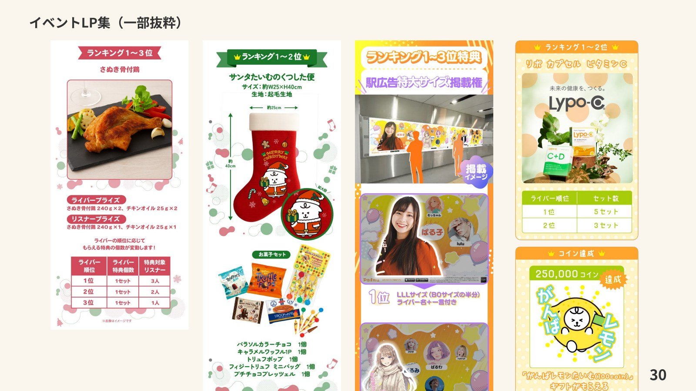
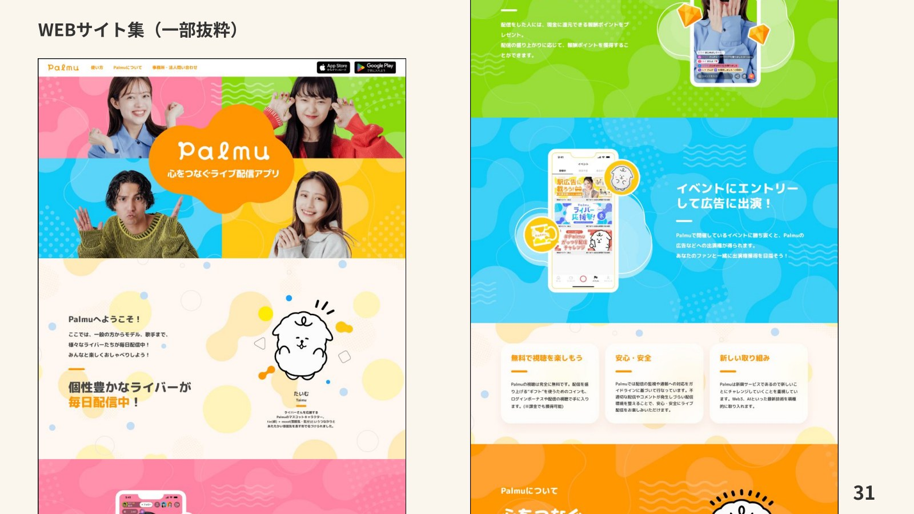

株式会社Lightでの制作実績
バナー・イベントLP・Webサイトの作成
Palmuのバナー、イベントLP、Webサイトの制作実績を掲載。各施策に合わせたビジュアルと情報の見せ方をデザインしました。
担当：バナーデザイン・イベントLP・Webサイト制作
制作内容
バナー、イベントLP、Webサイトの順に、制作したデザインの一部を紹介します。



はじめまして
株式会社Lightでの制作実績
Palmuのバナー、イベントLP、Webサイトの制作実績を掲載。各施策に合わせたビジュアルと情報の見せ方をデザインしました。
担当：バナーデザイン・イベントLP・Webサイト制作
バナー、イベントLP、Webサイトの順に、制作したデザインの一部を紹介します。

